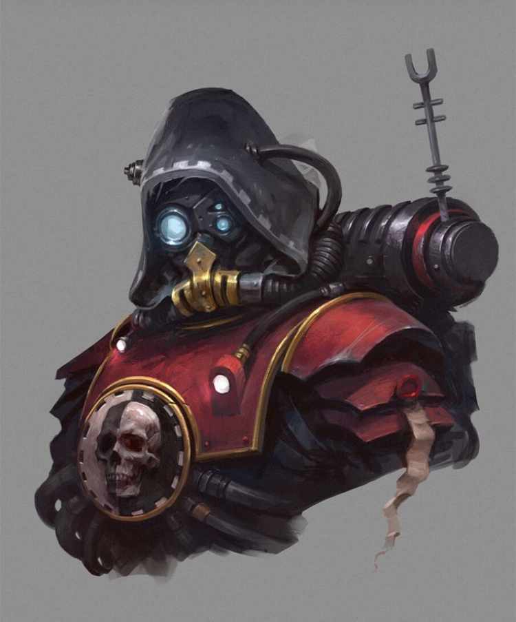

Blasphemous
La gestión de activos biológicos es una tarea de cálculo sagrado. Las cohortes Skitarii combinan la maleabilidad de la carne con la pureza lógica de los imperativos de datos. Cada unidad es un recurso procesado para maximizar el ratio de eliminación/gasto en entornos de combate de alta intensidad y zonas de guerra no lineales.
Nuestras directivas presentan frases de pureza binaria para el espíritu de la máquina: La carne es débil, el metal es eterno. No busques consuelo en el sol de mundos lejanos, búscalo en el calor de un reactor de plasma bien calibrado.
